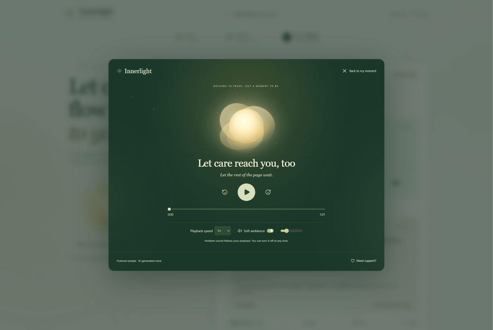

Speak.
Write what is on your mind, or record a short voice message. There are no perfect words to find.
TEXT OR VOICE · UP TO 45 SECONDS
A SPACE FOR SELF-COMPASSION
For the part of you that gives so much.
A moment to hear what you need.
A fictional story. A real listening experience. No sign-in.
There is room
for you here.
Nothing to prove. Just a moment to be.
Listen to a little careTHE IDEA
Sometimes, looking after everyone else makes our own needs harder to hear. Innerlight makes a small space to set down what you are carrying, correct what the system understands, and listen to a reflection shaped around your words.
Built as an emotional well-being prototype, with room for uncertainty, choice, and rest.
A LITTLE CARE, CARRIED WITH YOU
From the words you share to
something you can keep.
Write what is on your mind, or record a short voice message. There are no perfect words to find.
Review possible feelings, needs, and expectations. Edit the understanding before it guides your reflection.
Listen in a quiet focus room. Keep a reminder card, a small optional step, or your narrated reflection.

TRY A MOMENT OF INNERLIGHT
Three fictional scenarios.
Prewritten reflections. AI-generated voice.
01 / THE WORDS
“I'm always looking after my partner's feelings, listening and staying up late with them. Lately I'm exhausted, but I worry that wanting a break means I don't love them enough. I feel like I've lost myself.”
02 / A POSSIBLE UNDERSTANDING
Exhausted, worried, and a little overlooked
A NEED THAT DESERVES ROOMRest, and space for your own needs to be heard
03 / A LITTLE CARE TO KEEP
I can love someone deeply and care for myself, too.
For a moment, let the things you are carrying rest beside you. Notice your feet on the floor, or look at one familiar object nearby. Let your breathing stay natural. There is no special way you need to do this.
Use the audio above to hear the complete prewritten reflection.
This public preview plays existing sample audio. It does not record your voice or generate new content. The full live prototype uses server-side AI and requires authorized access.
THOUGHTFULLY BUILT
A voice-first application built with React, TypeScript, and Vinext on Cloudflare Workers. Alibaba Cloud Qwen services handle structured reflections, speech recognition, and narration.
Explore the codeReview and edit the system's reflection before creating your personalized audio.
Fictional samples are labeled. Live errors are shown, with no silent switch to prerecorded responses.
Preserved drafts, playback controls, optional local ambience, and downloadable reminders.
A LITTLE LIGHT, JUST FOR YOU